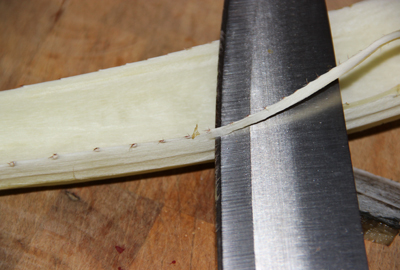

We moeten toegeven dat kardoen niet de gemakkelijkst te bereiden groenten is. Bovendien is deze groente moeilijk te vinden. Maar in een lekkere bereiding kan de beste fijnproever worden overtuigd. De smaak lijkt op die van de artisjok en de textuur lijkt op die van bleekselderij.
Kardoen is verwant aan de artisjok. Ze behoren immers tot dezelfde familie (composietenfamilie of Asteraceae) en zelfs tot hetzelfde genus (Cynara)! Eigenlijk gaat het om twee gekweekte soorten die afstammen van eenzelfde wilde distel. Toch is het eetbare gedeelte niet hetzelfde. Bij de artisjok wordt enkel het bloemgestel gebruikt terwijl bij de kardoen enkel de vezelige bladstelen en het middennerf worden gegeten.
Voor de bereiding van kardoen is wat geduld vereist. Eerst worden de middennerven losgemaakt van het uiteinde. Vervolgens moeten de stekels over de hele lengte worden verwijderd (zie foto). Daarna moeten ze in stukken worden gesneden om ze te kunnen schillen en ontvezelen. De binnenzijde is bedekt met een film die moet worden verwijderd. Dit gaat gemakkelijk door de film met een mes vast te nemen en eraf te trekken. Kijk steeds nauwkeurig na of alles is verwijderd.
In de tweede stap moeten alle vezelige gedeelten aan de buitenzijde van het middennerf worden verwijderd. Zoals bij selderstelen kunnen de vezeldraden worden verwijderd door met een mes overlangs de steel te glijden. Het is belangrijk hieraan genoeg aandacht te besteden om onaangename vezels in het gerecht te vermijden.
Om te vermijden dat kardoen een bruine kleur krijgt, kunnen de kookklare stukken in citroenwater worden gelegd.
Wanneer alle stelen schoongemaakt zijn, kunnen ze in kokend water met citroen worden gelegd gedurende 20 à 30 minuten, afhankelijk van de kwaliteit van de groente. De kardoen is klaar wanneer de stukjes zacht en mals zijn.
Ten slotte kan de klaargemaakte kardoen worden gebruikt in verschillende gerechten. Traditioneel worden ze gegratineerd voor het kerstmaal in verschillende streken in Zwitserland en Frankrijk.